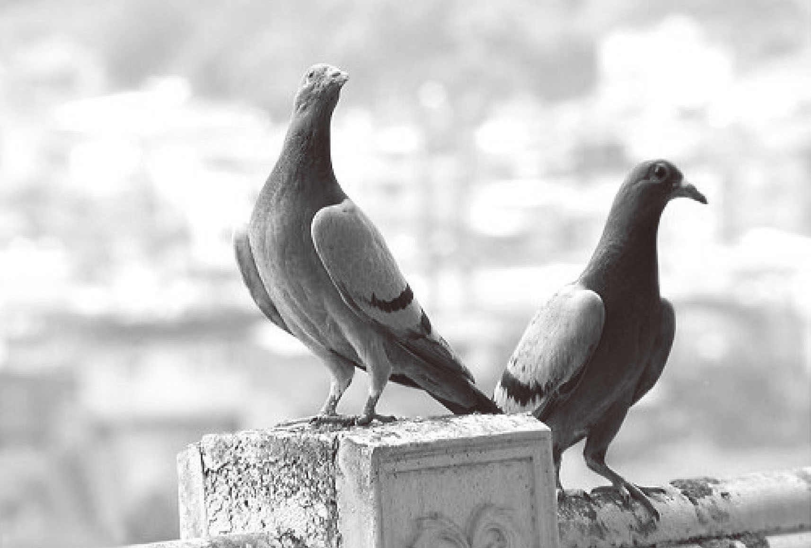

主要族的形成途径
现在我们来更详细地考察一下主要族所赖以形成的可能步骤。当勃鸽在它们的原产地被养于鸽舍中并且在它们的选择和交配方面得不到任何注意而处于半家养状况下的期间，它们的变异只比野生岩鸽的多一点点，这些变异不过是翅膀上的黑色棋盘斑、臀部的青色或白色以及体部的大小而已。然而，当鹁鸽被输送到像萨拉热窝内、马来群岛以及马德拉这许多各不相同的地方时，它们便处于新的生活条件之下；结果，显然会以多少比较大一点的程度发生变异。当它们被严密拘禁的时候，不论这是为了观赏的乐趣或是为了防止它们逃走，它们便处于相当不同的生活条件之下，甚至在原来的气候中也是如此；因为它们不能像在自然状态下那样地得到各种各样的食物；而且大概更重要的是，它们有大量的食物可吃，但不能从事很多的运动。用所有其他家养动物的例子来类推，我们可以预料到，它们在这样环境条件下所发生的个体变异量一定比野生鸽为大；而且情形也确系如此。运动的缺少显然会引起脚的大小和飞翔器官的退化；于是，由于生长相关的法则，喙显然要受到影响。根据现今在我们鸽舍中所看到的偶然发生的情形，我们可以作出这样的结论：突然的变异，例如头上羽冠、羽脚、新色泽、尾和翅上的过多羽毛的出现，大概自从鸽子最初被家养以来所经过的许多世纪中已经稀疏地发生了。今天，这等突然变异一般被当作瑕疵而遭到了排斥；而且在鸽子的繁育中存在着如此重大的神秘性，以致一种有价值的突然变异如果确实发生了，它的历史也往往会被隐蔽起来的。在150年以前，把任何这等突然变异的历史记载下来，几乎是没有可能的。但是决不能据此就断言，当以往鸽子发生变异很小的时候，这等突然变异会遭到排斥。我们对于每个突然的而且显然自发的变异的原因是深刻无知的，同时我们对于同科中鸟类之间所存在的无限多的色泽差异也是深刻无知的。但是在将来的一章里，我们将会看到所有这等变异似乎都是生活条件中某种变化的间接结果。
因此，经过长期的家养过程之后，我们大概可以预料到在鸽子中会发生很大的个体变异、偶尔的突然变异、由于某些部分的减少使用以及生长相关的作用所引起的微小改变。但是，如果不进行选择，所有这些只能产生轻微的结果，或者根本不会产生什么结果；因为没有这样的帮助，所有种类的差异就会由于以下的两个原因而迅速消失。在健康的和精力旺盛的鸽群中，被杀掉用作食品的和死去的幼鸽比可以活到成熟时期的幼鸽为多；所以具有任何特殊性状的个体，如果得不到选择，遭到毁灭的机会是很多的；纵使没有遭到毁灭，这种问题中的特征一般也会由于自由交配而消失掉。然而，偶尔可能发生这样的事情：由于特殊的和一致的生活条件的作用，同一变异会反复出现，在这样场合下，就是不进行选择，这种变异也会得势的。但是，当选择发生作用的时候，一切就都改变了；因为选择是新族形成的基础；关于鸽子，像我们已经看到的那样，环境条件是非常有利于选择的。如果呈现某种显著变异的个体被保存下来了，并且对于它的后代进行了选择，细心地使它们交配，再行繁育，这样在连续世代中不断地进行下去，那么这一原理就会明显到如此地步，以致不必对它再多说什么了。这可以称为有计划的选择（methodical selection），因为育种者在他心目中已经有了一个明确的目的，即把某种实际出现的性状保存下来；或者根据他心目中已经存在的蓝图来创造某种改进。
另一种选择的方式几乎没有被那些讨论这一问题的作者们注意到，但是它甚至更为重要。这种方式可以称为无意识的选择（unconscious selection），因为育种者是无意识地、不知不觉地而且没有方法地选择他的个体的，然而他可以肯定地、虽然缓慢地产生巨大的结果。我所指的是由于各个养鸽者按照他的技巧并且按照各代中的优良性的标准最初获得了他所能获得的优良个体并且此后培育它们的后代因而发生的那种效果。他没有永久改变一个品种的愿望；他并不展望遥远的将来，或者推测连续的微小变化在许多世代中缓慢积累的最后结果；如果他能拥有优良的一群，他就会满足了，如果他能胜过他的竞争者，他就会更加满足了。当阿尔祝万狄时代的养鸽者在1600年赞美他自己的毛领鸽、突胸鸽或信鸽的时候，他决不会想到它们的后代在1860年将会变成什么样子：如果他看到了我们的毛领鸽、改良的英国信鸽以及我们的突胸鸽，恐怕还要大吃一惊呢；他可能否认这是他一度赞美过的那些鸽子的后代；他也许不会重视它们，这不是为了别的原因，而只是为了像1765年间所写的那样：“它们和以往时尚中所惯于被认为优良的鸽子不相像了。”谁都不会把信鸽的增长了的喙、短面翻飞鸽的缩短了的喙、突胸鸽的增长了的腿、毛领鸽的更加完善地遮盖了头部的头巾状羽毛等等——这是在阿尔祝万狄的时代以后、甚至在更晚的期间以后发生的变化——归因于生活条件的直接作用。为什么这样说呢，因为这几个族虽然被养在同样的气候条件之下并且在一切方面得到了尽可能一致的处理，但它们却朝着种种不同的方向、甚至完全相反的方向进行改变。在喙的长和短上、在腿的长度上以及在其他方面的每一个轻微变化，无疑是间接地和遥远地由这个鸽子所遭遇到的生活条件中的某种变化所引起的但是我们必须把最终的结果，像在多少有点历史纪录的那些场合中所显示的那样，归因于对许多微小的连续变异所进行的不断的选择和积累。
只就鸽子来说，无意识选择的作用是取决于有关人类本性的一项普遍原理的，即决定于我们的竞争心以及胜过邻人的那种欲望。我们在每一个变幻无常的时尚中、甚至在我们的服装中都会看到这一点，它引导养鸽者努力去扩大他的品种的每一个特点。从事鸽子研究的一位大权威者[1]说道，“养鸽者们不会而且将来也不会赞美中庸的、不此不彼的中间标准，他们所赞美的是极端”。当说完短面翻飞鸽爱好者所希求的是一种很短的喙、长面翻飞鸽爱好者所希求的是一种很长的喙之后，关于中间的长度，他这样说道：“不要自欺。你能片刻想象短面翻飞鹤爱好者或长面翻飞鸽爱好者会把这样一只鸽子作为天赐之物而接受下来吗？肯定是不会的；短面翻飞鸽爱好者不能在它身上看到任何美丽的东西；长面翻飞鸽爱好者将会咒骂在它身上找不到什么有用的东西，等等。”在这篇严肃写作的、但是滑稽的文章中，我们看到了曾经反复不断地指导着养鸽者们并且曾经在所有家养族中导致如此巨大改变的原理，这些家养族完全以它们的美丽和奇异而受到重视的。
在鸽子繁育中所流行的时尚可以持续长久的期间；我们不能像改变服装那样快地去改变鸽子的构造。在阿尔祝万狄的时代里，无疑地突胸鸽愈能膨胀起它的嗉囊就愈有价值。尽管如此，时尚在某种程度上还是有变化的；最初是构造上的这一点受到注意，然后是另一点受到注意；这就是说，在不同的时代和不同的地方赞美着不同的品种。刚才提到的那位作者说过，“爱好有盛衰；一个彻底的养鸽者今天决不会屈身于玩具鸽的繁育工作”；然而就是这等玩具鸽今天在德国却被非常细心地繁育着。今天在印度被认为高度有价值的品种，在英国却一文不值。无疑地当品种受到忽视的时候，它们就会退化；我们还可以相信，只要它们被养在同样的生活条件之下，一度获得的性状将会部分地长久保持下去，并且可能为将来的选择过程形成一个起点。
不要因为养鸽者没有观察到或者注意到极其微小的差异就来反对无意识选择可以发生作用这一观点。只有那些同养鸽者交往过的人们才能体会到他们在长期实践中所获的正确辨别能力以及他们在鸽子身上投下去的注意和劳动。我知道有过一位养鸽者继以日夜地审慎研究他的品种，以便决定哪些应该放在一起交配，哪些应当淘汰。请看一看这一问题即便对于一位最优秀的和富有经验的养鸽者也是何等困难的吧。多次获奖的伊顿先生说，“这里我愿提醒你们注意，不要饲养太多的各色各样的鸽子，否则你对于所有的种类虽然可以了解一点，但对于应当了解的一个种类却一点也不能了解”。“可能有少数的养鸽者对于若干观赏鸽具有丰富的一般知识，但是强不知以为知在迷妄中工作的人们还是很多的”。专就一个亚变种、即短面扁桃翻飞鸽而论，他谈到某些养鸽者为获得优良的头和喙，便牺牲了所有其他的性质，而另外一些养鸽者却为了羽衣，便牺牲了所有其他的东西，接着他又说，“某些年青的养鸽者贪心太大，希望一次得到所有的五样性质，但结果却一样也没有得到”。勃里斯先生告诉我说，在印度也同样非常注意鸽子的选择和交配。我们切不要用现今所重视的差异来判断现存变种中有哪些轻微变异在古代会受到重视；现今的差异是在如此众多的族形成以后——各个族都已达到了自己的完善标准，都由于我们的无数“展览会”而保持了一致——受到重视的。最富精力的养鸽者不必试图形成一个新品种而由于在既经确立的品种方面难于凌驾其他养鸽者大概就可以使其野心得到充分的满足。
有关选择力量的一个难点或者已在读者心中发生了，即引导养鸽者们最初企图创造像突胸鸽、扇尾鸽、信鸽等那样奇异的品种是什么呢？但是无意识选择的原理恰恰消除了这个难点。毫无疑问，没有一个养鸽者曾经有过这样的企图。我们所需要假设的只是，有一种，显著到足可以吸住某一位古代养鸽者的有辨别能力的眼睛的变异发生了，于是在许多世代中继续施行着的无意识选择，即后继的养鸽者们希图胜过他们的竞争者的那种欲望，便解决了其余的问题。在扇尾鸽的场合中，我们可以假定这个品种的最初祖先，就像现今在某些侏儒鸽[2]中可以看到的那样，具有一个只是稍微直竖的尾，并且尾羽的数目增加了一些，就像现今在尼鸽中偶尔发生的情形那样。在突胸鸽的场合中，我们可以假定某一只鸽子可以使它的嗉囊膨胀得比其他鸽子稍大一些，就像现今浮羽鸽可以使它的食道膨胀得稍大一些一样。我们不知道普通翻飞鸽的起源，但是我们可以假定有一只鸽子生来就有某种脑筋的疾病，使它在空中翻筋斗[3]，而且在1600年以前，以各色各样的飞翔方式为特征的鸽子在印度已经受到了重视，同时根据亚格伯汗皇帝的诏令，这种鸽子受到了不倦的训练，并且对于它们的交配也给予了密切的注意。
在上述的例子中，我们假定了最初出现的是一种显著到足以吸住养鸽者的眼睛的突然变异；但是，在变异过程中甚至这样突然的程度对于一个新品种的形成并不是必要的。当同一种类的鸽子已经保持了它们的纯度并且经过了两个或两个以上的养鸽者的长期繁育的时候，在这个品系中往往还能辨识出微小的差异。例如，我曾看见过某一个人养的第一流毛领鸽在若干性状上肯定地同另一个人养的毛领鸽微有不同。我拥有一些最优良的排孛鸽，它们是从一对获奖的鸽子传下来的，我还拥有另外一群排孛鹤，它们是从著名的养鸽者塞勃来特爵士以前饲养的一群传下来的，这二者在喙的形状方面显然有所差异；但是差异非常之小，以致几乎不能用言语来形容。再者，普通的英国翻飞鸽和荷兰翻飞鸽之间在喙的长度和头的形状方面的差异多少还要大一些。最初引起这些微小差异的是什么，关于这一点我们所能解释的并不比我们对于某一个人为什么鼻子长而另一个人为什么鼻子短所能解释的为多。在不同的养鸽者们长期分别饲养的品系中，这等差异是如此普遍，以致我们不能用以下的情形来解释它们：即原来就具有同今天一样差异的鸽子最初偶然地被选择作为繁育之用了。它的解释无疑是，微有差异的性状在各个场合中得到了选择；因为没有两个养鸽者的趣味是完全一样的，所以没有两个人在选择和细心交配他的鸽子方面会完全一样的。因为每个人天然地都赞美他自己的鸽子，所以不管它们可能具有多么微小的特点，他也会用选择的方法来继续不断地扩大这些特点的。如果养鸽者们居住在不同的地方，并且他们不互作比较，也不追求一个共同的完善的标准，那么就尤其会发生上述这种情形了。这样，当仅仅是一个品系形成了的时候，无意识的选择就有一种倾向来扩大它的差异量，于是使这个品系变成了亚品种，最终使它变成了特征显著的品种或族。
决不要忽略了生长相关的原理。大多数鸽子的脚都是小的，这显然是由于它们的减少使用而引起的，而且可能同此相关的是，它们的喙也同样缩短了。喙是一种显著的器官，一旦它们缩短到可以觉察的程度，养鸽者几乎肯定地会不断选择具有最短喙的个体，努力使它们的喙更加缩短；同时，其他一些养鸽者，就像我们所知道的实际情形那样，则在其他亚品种中努力增加喙的长度。随着喙的增长，舌也大大变长了，这就像随着眼睛周围的肉垂的增强发育，眼睑的发育也增强了一样；随着脚的增大或缩小，鳞甲的数目也变异了；随着翅长的变化，初级飞羽的数目出现了差异；并且随着突胸鸽的体部的增长，荐椎的数目也增加了。这些重要而相关的构造上的差异并不一定都会构成任何品种的特征，但是，如果对于它们所给予的注意和选择就像对于更加显著的外在变异那样地谨慎小心，那么这些差异几乎无可怀疑地将会成为固定的。养鸽者的确可以创造翻飞鸽的一个族，不具10支初级飞羽，而具9支初级飞羽，因为，纵使他们没有希望过这种事情并且在白翅变种的场合中的确还同他们的希望相反，而9支这个数目多么屡展地出现，如果椎骨是可以看得见的，并且受到了养鸽者们的注意，同样的，多余数目的椎骨的确可以容易地在突胸鸽中固定下来。如果这两种性状一旦稳定了，我们或者从来不会猜想到它们最初是高度容易变异的，也不会猜想到它们是由于相关作用而发生的：在一种场合中它们是由于同短翅膀相关而发生的，在另一种场合中则是由于同长体部相关而发生的。
为了理解主要的家养族怎样变得彼此互有明显的区别，记住以下的事情是重要的：即养鸽者经常试着用最优良的个体去繁育，结果那些在所需要的品质上表现低劣的个体在每一代中都遭到了忽视；所以经过一个时期之后，改进较少的原种以及此后形成的许多中间程度的个体都灭绝了。在突胸鸽、浮羽鸽和喇叭鸽的场合中都发生过这种情形，因为在这些高度改良的品种之间今天并没有任何环节可以把它们密切地连接在一起，或者把它们同原种岩鸽密切地连接在一起。诚然，在其他一些地区没有付出过同样的注意，或者没有流行过同样的时尚，所以往昔的类型在那里还可以长期保持不变，或者只有微小程度的改变，这样，我们有时便能重新找到中间的环节。翻飞鸽和信鸽在波斯和印度就是这种情形，在那里，它们在喙的比例方面同岩鸽只有微小的差异。还有，爪哇的扇尾鸽有时只有十四支尾羽，而且尾的直竖和开张的程度也远不如我们改良了的扇尾鸽那样大；所以爪哇扇尾鸽在第一流扇尾鸽和岩鸽之间便形成了一个环节。
有时在同一地区内，某一个品种可能同它的高度变异了的后代或者同一些因为具有某种不同性质而被认为有价值的亚品种相处在一起，但前者在某种特殊品质方面却保持了几乎不变的状态。我们在英国就可以看到这种例子，那里的普通翻飞鸽仅是由于它们的飞翔方式而受到重视，它同亲类型，东方翻飞鸽并没有多大差异；而短面翻飞鸽所发生的变异却非常之大，它之所以受到重视并不仅仅由于它的飞翔方式，而且也由于它的其他品质。但是，普通飞法的欧洲翻飞鸽已经开始分歧出一些差异微小的亚品种，例如普通英国翻飞鸽、荷兰翻滚鸽（Dutch Roller）、格拉斯哥室内翻飞鸽（Glasgow House-tumbler）以及长面翻飞鸽（Longfaced Beard Tumbler）等等；在若干世纪的过程中，除非时尚有巨大的变化，这些亚品种将会通过无意识选择的缓慢而不可察觉的过程发生分歧，并且它们的变异程度愈来愈大。经过一段时期以后，现今把所有这些亚品种连接在一起的完全级进的环节将会消失，因为保持这等大量的中间亚变种并没有任何意义，却有很大的困难。
分歧原理以及许多既往存在过的中间类型的灭绝对于理解家养族的起源以及对于理解在自然状况下的物种的起源是如此重要，以致我愿就这个问题多谈一点。我们的第三个主要群包含信鸽、排孛鸽和侏儒鸽，它们彼此之间显然有密切的关系，然而在若干重要性状上都有明显的区别。根据在上一章里所提出的观点，这三个族大概是从一个具有中间性状的未知的族传下来的，而这个族又是从岩鸽传下来的。人们相信它们在特征上的差异是由于不同的育种者在早期对于构造上的不同特点有着各自的爱好；于是，根据赞美极端的公认原则，育种者并没有想到将来，只是继续不断地繁育尽可能优良的鸽子——信鸽爱好者选择肉垂多而喙长的——排孛鸽爱好者选择眼睛周围肉垂多的和喙短而厚的——侏儒鸽爱好者并不注意喙或肉垂，却只注意体部的大小和重量。这一过程将会导致对于初期的、低劣的和中间性的鸽子的忽视，因而引起它们的最后灭绝；于是便发生了这样的事情：这三个族在欧洲表现了异常的不同。但是在它们的原产地东方，时尚是不同的，而且我们看到那里的品种连接着高度变异了的英国信鸽和岩鸽，并且还有其他品种在某种程度上连接着信鸽和侏儒鸽。回头看一看阿尔祝万狄的时代，我们便可发现1600年以前在欧洲存在着四个同信鸽和排孛鸽密切近似的品种，但是有资格的权威者并不能把它们同我们现在的排孛鸽和信鸽等同起来；而且也不能把阿尔祝万狄的侏儒鸽同我们现在的侏儒鸽等同起来。这四个品种彼此之间的差异肯定不如我们的现有英国信鸽、排孛鸽和侏儒鸽那样大。这些都是我们完全可以预料到的事情。如果我们能够搜集到从罗马时代以前一直到今天曾经生存过的所有鸽子，我们便可以把它们分类在从原种岩鸽分歧出来的几个系统之下。各个系统都是由几乎不可觉察的级进构成的，但有时会被稍微大一点的变异或突然变异所打断，并且各个系统都是以一个现今高度变异了的类型为终点的。在许多既往的中间环节中，有些没有留下任何子孙而绝对地绝灭了，其他一些虽然灭绝了，但可能作为现存族的祖先而被识别起来。
我曾听到把以下的情形作为一件奇怪的事情来说，即我们有时听到家养族局部地或者全部地灭绝了，然而关于它们的起源却什么也没有听到。曾经这样问过：这些损失是怎样补偿的呢？并且是怎样超过了补偿的呢？因为我们知道自从罗马时代以后，几乎所有家养动物的族在数目上都大大增加了。根据这里提出来的观点，我们便能理解这种表面上的矛盾。在有史时期以内，一个族的灭绝是一件可能受到注意的事情；但是，它通过无意识选择所发生的逐渐而几乎不可觉察的变化，此后它在同一地方、更普通是在遥远地方分化为两个或两个以上的品系，以及这些品系逐渐转变成亚品种并且这些亚品种转变成特征显著的品种，都是一些很少受到注意的事情。一株巨树之死，被记录下来了；小树的缓慢生长以及它们的数目的增加，却没有引起任何注意。
如果相信选择有巨大的力量，并且相信变化了的生活条件除了可以引起体制的一般变异性和可塑性以外只有很小的直接力量，那么，关于鹁鸽自从极古时代以来就保持了不变的状态，以及关于不在颜色方面而在其他方面同鹁鸽很少差异的某些玩具鸽把同一性状保持了几个世纪，就不值得惊奇了。因为这些玩具鸽如果有一只一旦获得了美丽的和对称的颜色——例如，如果产生了这样一只斑点鸽；它的头上羽冠、尾以及尾部复羽的颜色是一致的，而其余体部的颜色是雪白的——那么，就不会再希求什么变化或改进了。另一方面，关于我们高度育成的鸽子在这同一段时间内发生了可惊的变化，也是不值得惊奇的；因为养鸽者对于它们的希求并没有一定的限度，而且它们的性状的变异性也没有已知的限度。有什么可以阻止养鸽者希求使他的信鸽具有愈来愈长的喙或者阻止他们希求使他的翻飞鸽具有愈来愈短的喙呢？喙的变异性也没有极限，如果有这种极限，那还没有达到。尽管短面扁桃翻飞鸽在近代得到了巨大的改良，但是伊顿先生还说，“改良工作的战场还同100年前一样地向新进的竞赛者敞开着”；但这恐怕是一种夸大的论断，因为高度改良了的玩赏鸽都极其容易害病而致死亡。
我曾听到有这样的反对意见，即认为若干鸽的家养族的形成对于鸠鸽科的野生种的起源并没有提供任何见解，因为它们之间的差异并不是同一性质的。例如，家养族在初级飞羽的相对长度和形状方面，在后趾的相对长度方面，或者在生活习性方面（例如在树上栖息和筑巢的习性），都没有差异，纵使有差异，也是非常小的。但是这种反对意见表明了选择原理多么完全地被误解了。由于人类的反复无常的兴趣而得到选择的性状同在自然状态下由于直接对各个物种有用或者由于和其他变异了的有用构造相关而被保存下来的差异彼此相似的事情，大概是不会有的。除非人类选择了在翼羽或趾方面有所差异的鸽子，我们便不应期望这些部分会发生明显的变化。除非这些部分恰巧在家养状况下发生了变异，人类也是无能为力的。我并不积极地肯定事实就是如此，虽然我在翼羽而且确实在尾羽方面看到了这等变异性的痕迹。脚在大小和鳞甲上多么容易变异，所以如果说后趾的相对长度绝不会发生变异，大概是一个奇怪的事实。关于家养族不在树上栖息或筑巢的情形，养鸽者们显然决不会注意到或选择习性中的这等变化的；但是我们看到埃及的鸽子为了某种原因不喜欢在土人的低小茅泥屋上停留，它们显然是由于一种强制的力量才成群地在树上栖息的。我们甚至可以肯定地说，如果我们的家养族在上述任何一点发生了巨大的变异，并且能够证明养鸽者们从来没有注意过这些点，或者这些点并不同其他被选择的性状相关，那么这个事实对于本章所提倡的原理来说则是一个严重的难点。
让我们把以上有关鸽子的两章概略地总结一下。我们可以有信心地作出这样的结论：尽管所有家养族有着巨大程度的差异，它们都是从包含着某些野生族的岩鸽传下来的。但是野生族之间的差异对于区别家养族的性状并没有提供任何见解。各品种或亚品种中的个体比处于自然状态下的个体容易发生变异；它们有时以突然的或强烈显著的方式发生变异。体制的这种可塑性显然是由生活条件的变化所引起的。不使用使身体的某些部分退化了。生长相关如此紧密地把体制联系在一起，以致某一部分发生变异，其他部分也会同时发生变异。当几个品种一旦形成了之后，它们之间的杂交，对于变异的过程就会有所帮助，甚至会产生新的亚品种。但是，建筑一座房屋，如果没有建筑师的技术，只有石和砖也是没有什么用处的，同样的，在产生新的族中，选择是主要的力量。饲养者用选择的方法可以对非常微小的个体差异发生作用，也可以对那些叫做突然变异的较大差异发生作用。当饲养者按照一个特点的既定标准来试图改良和改变一个品种时，选择就是有计划地进行的；当他们只试图育成尽可能优良的鸽子而没有任何改变品种的希求或意愿时，选择就是无计划地和无意识地进行的。选择的进行几乎不可避免地要导致早期的和改良较少的类型以及各个悠长系统中的许多中间环节遭到忽视和最终的灭绝。这样，我们大多数的现存族彼此之间以及它们同原种岩鸽之间便出现了如此显著的差异。

[1] 伊顿：《鸽论》，1858年，第86页。
[2] 参阅纽美斯特的《鸽的饲育》中的第13图，“佛罗伦斯侏儒鸽”。
[3] 关于印度的地面翻飞鸽，慕尔过充分的记载（《印度医学新报》，Indian Medical gazette，一月号和二月号，1873年），他并且说道，刺戳脑的基部，同时施以氢氰酸（hydro-cyanic acid）和番木鳖碱（Stry-chnine），就可使一只正常的鸽子发生同翻飞鸽完全一样的痉挛性运动。有一只被刺戳过脑子的鸽子，它虽然完全复原了，但此后还有时翻筋斗。